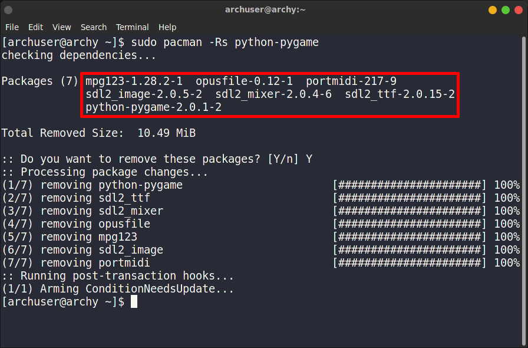
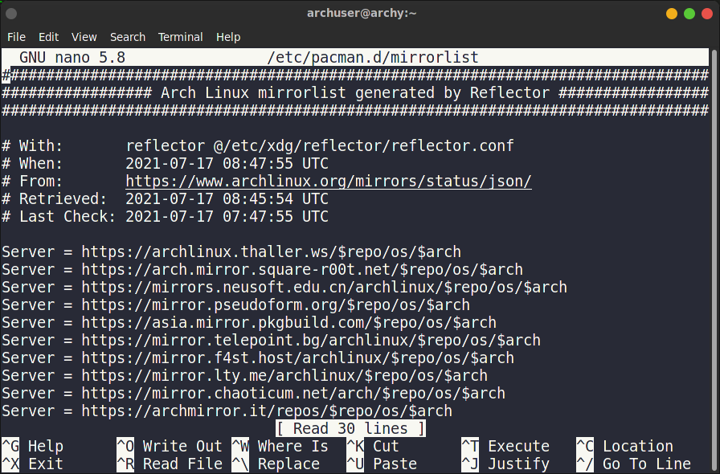

There are several package managers out there. They vary from the distributions. Arch Linux and it's derivatives use a special package manager called pacman. It's very simple, powerful and easy to use. Today we will cover some of the basic commands of this package manager.
The pacman commands have a very common structure. Every command starts with pacman, followed by a hyphen, a capital letter and some small letters as additional options. Some commands need sudo privilege and some don't. We will explore them as we approach further.
sudo pacman -Syy
Here -S syncs the online repositories to the local machine. y
simply updates the machine. If the machine is already up to date, then the syncing process doesn't take place. But
if we add another y, we force the syncing process to happen. If we don't want to force the
updating process, we can simply skip the letter.
sudo pacman -Sy
To update the machine, type:
sudo pacman -Su
Here, u stands for update. We can use this command only after using the previous one.
If we want to write the both commands at the same time, we can simply merge them together and write:
sudo pacman -Syu
 This command means to sync the repositories and then update the machine. It is the safe
command to run if we want to update.
This command means to sync the repositories and then update the machine. It is the safe
command to run if we want to update.
sudo pacman -S htop
Here we are installing a software named "htop". If we want, we can install multiple packages at the same time.
sudo pacman -S vim emacs firefox
Here we are installing three softwares named "vim", "emacs" and "firefox" at the same time.
Sometimes it can happen that, we want to install a package but we don't know the exact name. Therefore
installing with that wrong name will throw an error. To avoid that, we would use this command:
pacman -Ss pygame
Here, we want to install a package named "pygame", but we don't know what the exact package name is. Therefore we are
searching for this name to get the relevant packages.
sudo pacman -R htop
Sometimes, packages come with a bunch of dependencies. If we want to uninstall the package along side with its
dependencies, use previous command with s flag.
sudo pacman -Rs python-pygame

Sometimes the packages creates their own .config files. So removing those packages only doesn't remove those configuration files. If we
want to remove the .config files as well, use n flag!
sudo pacman -Rns emacs
It is the preferred command for removing packages.
pacman -Q
If you want to see the only packages you installed on your system, then use the previous command with an
e flag!
pacman -Qe
If we want to avoid the version number, add the q flag.
pacman -Qq
If you want to see if any package is installed in your system, use the s flag!
pacman -Qs gedit
TIPS: Querying any package doesn't require root privileges as it doesn't install or remove any package in the system. So
we don't use "sudo" here. Although using "sudo" also gives us the same output, it is better not to use
where it is not needed.
pacman -Qdt
Maybe you don't even look at the orphan packages. You just wanna get rid of them. Then type this command:
sudo pacman -Rns $(pacman -Qdtq)
If you want to know the total number of packages installed in your system via pacman package manager, then run this command:
pacman -Q | wc -l
Similarly If you want to know the number of packages you installed only, then run this command:
pacman -Qe | wc -l
sudo pacman -Syyuw
Here w flag is preventing the packages to be installed directly. Rather it is downloading them so that you can manually install them
later. The rest of the part has been discussed earlier.
CAUTION: If you don't know what you are doing. Don't use this command.
If you want to get the packages installed from the official pacman repositories only, then type:
pacman -Qqen
If you want to get the AUR packages only, then type:
pacman -Qqem
sudo pacman -Sc
sudo nano /etc/pacman.conf
Find the word "Color". Activate the search option by pressing the shortcut Ctrl + W
and type #Color. Press Enter .
You should jump to the line #Color. Uncomment it by removing the # sign. Go to the line #VerbosePkgLists. Under that line write ILoveCandy.
Ctrl + O Enter to save and Ctrl + X Enter to exit the editor.
Now you will be able to see some colors and pacman eating candy effects in terminal.
The pacman package manager collects packages from the servers around the world. May be you are communicating with a server that is far away from your current location. In that case, you need to tweak the mirror-list a bit. For that, edit the /etc/pacman.d/mirrorlist file.
sudo nano /etc/pacman.d/mirrorlist

Here you will see a bunch of server mirrors. pacman always prioritize the first mirrors rather than the last ones. So tweak it as you want.
man pacman
Read the documentation by scrolling and press q to quit.
That's it. Enjoy the pacman package manager.